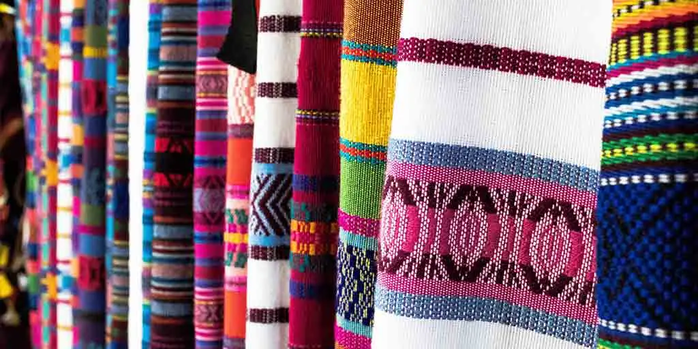

Explore the world where threads weave captivating stories and every stitch whispers of artistry. Online Textile Gallery is a curated online sanctuary dedicated to the vibrant and diverse world of textile art.
The digital realm offers an immersive experience, allowing you to explore the captivating beauty of textile art from home. This platform makes it easier than ever to discover the intricate details and powerful narratives that define this extraordinary art form.
Online Textile Gallery showcases a meticulously selected collection that spans the rich tapestry of textile traditions. Journey through traditional masterpieces, where centuries-old techniques and cultural heritage are preserved through intricate weaving, delicate embroidery, and time-honored dyeing processes.
The gallery also embraces the exhilarating world of contemporary creations. Here, artists push the boundaries of convention, exploring innovative materials, bold expressions, and thought-provoking concepts that redefine what textile art can be.
Whether you are a seasoned collector with an discerning eye for unique textile pieces or a newcomer eager to delve into this fascinating art form for the first time, Online Textile Gallery offers something for everyone. Explore carefully organized collections, browse by artist, technique, or theme, and allow yourself to be drawn into the beauty and depth of each artwork.
Perhaps you'll discover the perfect piece to inspire your next creative project, find a unique addition to your collection, or simply enjoy a moment of contemplation with a stunning piece of textile artistry. Welcome to a world where textile art comes alive.
Welcome to Online Textile Gallery.